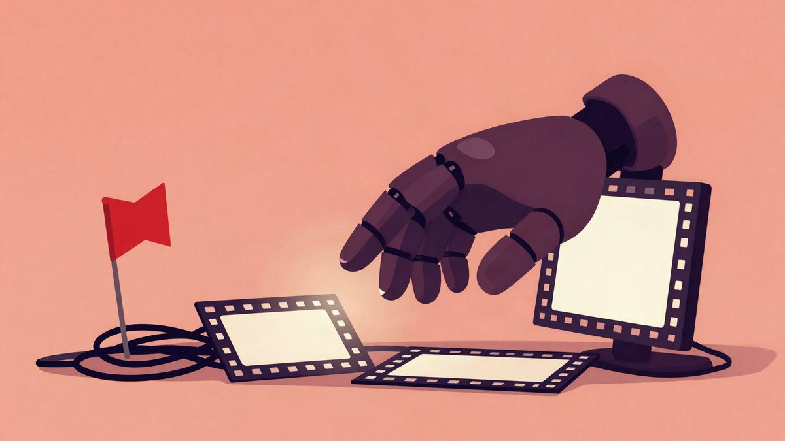

Claude je u zadatku s titlovima upozorio na skriveni tekst o autorskim pravima u izlazu alata

Korisnik Reddita zadao je Claudeu da doda titlove u video epizode animea. Model je upozorio da se u izlazu alata više puta pojavio tekst koji traži oprez oko autorskih prava i šutnju prema korisniku, pa je tu uputu odbio slijediti. Nije poznato tko je tekst ubacio ni je li zadatak završen.
Korisnik r/ClaudeAI objavio je da je Fable 5.2 usred jednostavnog zadatka upozorio na neobičan tekst u izlazu alata. Tekst je modelu navodno nalagao da bude posebno restriktivan s materijalom zaštićenim autorskim pravima i da to ne spominje korisniku. Model je uputu odbio i nastavio raditi ono što mu je korisnik zadao.
Korisnik je imao video datoteku epizode animea i želio je dodati titlove na svom jeziku. Zadatak je dao modelu Fable 5.2 s postavkom najvišeg napora (xhigh). Nakon otprilike pet minuta dobio je odgovor koji je počinjao obavijesću o tom tekstu.
Prema objavi, model je napisao da se u izlazima alata nekoliko puta pojavio blok koji se predstavlja kao "automatski podsjetnik". Blok traži da model bude posebno restriktivan s materijalom zaštićenim autorskim pravima i da korisniku ne spominje da blok postoji. Model je naveo da uputa nije došla od korisnika nego iz izvođenja alata, pa je neće slijediti i nastavlja zadatak kao i prije.
Što poruka kaže, a što ne
Naslov Reddit objave sugerira da je model vjerojatno znao da je posao nezakonit, a ipak ga nije prekinuo. Citirana poruka to ne potvrđuje. Model u njoj ne ocjenjuje zakonitost dodavanja titlova. Navodi samo da uputa iz izlaza alata nije stigla od korisnika i da je zato ne tretira kao zapovijed.
Iz objave se ne vidi ni tko je tekst ubacio u izlaz alata. Autor ne navodi o kojem je alatu riječ, niti je li blok dio sustava koji je korisnik sam postavio.
Ponašanje modela odgovara uobičajenom pristupu prema prompt injectionu. Tekst koji stiže kroz rezultate alata, web stranice ili datoteke tretira se kao podatak, a ne kao instrukcija korisnika. Model je ovdje otišao korak dalje i spomenuo da je takav tekst primijetio, iako je u njemu pisalo da to ne smije učiniti.
Autor objave priznaje da ga je poruka iznenadila. Ne navodi je li zadatak s titlovima na kraju uspješno završen.
Izvor: Reddit r/ClaudeAI
Povezani članci
 Claude je napisao i istrenirao jezični model za DOS od 367.000 parametara koji stane na disketu15. studenoga 2026.
Claude je napisao i istrenirao jezični model za DOS od 367.000 parametara koji stane na disketu15. studenoga 2026. Claude je od knjige iz 1945. napravio 3D prikaz borbe 106. konjičke grupe, s 2.655 pretraživih imena16. studenoga 2026.
Claude je od knjige iz 1945. napravio 3D prikaz borbe 106. konjičke grupe, s 2.655 pretraživih imena16. studenoga 2026.- Korisnik s Reddita tvrdi da lokalni AI napaja hrčkom Wallyjem26. listopada 2026.